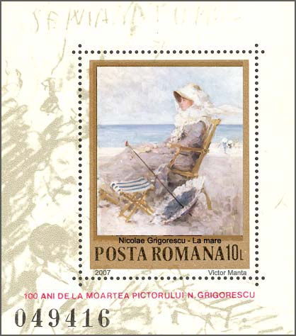
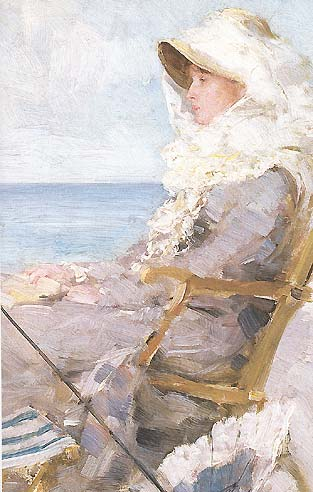
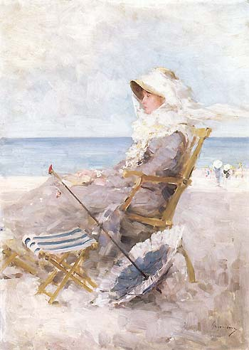
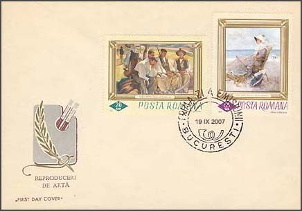
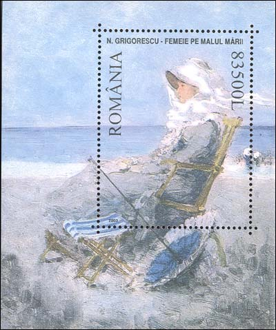

|
Muzeul National de Arta al Romaniei, Bucuresti Pe malul marii |
|
Pictorul clasic roman Nicolae Grigorescu s-a născut in anul 1838 la Pitaru si a murit in anul 1907 la C�mpina. El este considerat fondatorul scolii romaneşti moderne de pictura. El a fost fără �ndoiala primul pictor roman care a dezvoltat un stil personal si o tratare consecventa a subiectelor alese. Grigorescu a devenit renumit prin picturile care arata viata ţăranilor munteni din mijlocul secolului 19. P�nzele lui, inspirate din viata de la tara, captează trasatori specifice ale caracterului naţional romanesc si marchează ceea ce va deveni o tradiţie pentru generaţiile care �l vor urma.

Probabil realizata pe malul francez al Canalului M�necii, aceasta opera este una dintre putinele piese marine pictate vreodată de Grigorescu. Ea a fost pictata c�ndva intre 1880 si 1885. Eu am descoperit aceasta pictura abia in anul 2001, in timpul ultimei mele vizite a Muzeului Naţional. Privind-o, am avut brusc revelaţia faptului ca marele pictor clasic a fost mai degrabă un contemporan de al nostru, si nu un monument al unui trecut �ndepărtat, aşa cum �mi părea din tablourile sale pastorale. Imaginea delicata a acestei doamne frumoase si elegante mi-a plăcut at�t de mult, �nc�t mi-am zis ca pictura trebuie sa apăra pe un timbru �ncă in timpul vieţii mele.
 |
 |
Maniera in care este redata atmosfera, calitatea fluida si transparenta a picturii, trăsăturile spontane de penel, precum si trasaturile fetei sunt o reminiscenta a impresionismului. Dar in pictura lui Grigorescu, artist �ntotdeauna original, tonalitatile nu se dizolva in aer, diversele planuri nu devin transparente, ci, dimpotrivă, �şi reţin propria lor individualitate.

Malul, marea si cerul sunt redate cu claritate, permiţ�ndu-i privitorului sa se bucure de ambianta. Aceasta este incă o dovada a creativităţii sale, prin care pictorul a asimilat doar acele tehnici din tendinţele contemporane care se potriveau temperamentului sau artistic si viziunii sale despre arta. Maniera sa nu s-a bazat niciodată pe imitarea vreunei formule moderne, ceea ce i-a permis sa-si păstreze �ntreaga sa originalitate. (După Dana Herbay).
Timbrul arătat pe Plicul Prima Zi, ca si colita de la �nceputul paginii, vor fi emise in anul 2007, comemor�nd 100 de ani de la dispariţia artistului. Aceasta este prima serie in filatelia mondiala care este arătata cum mult �naintea apariţiei ei oficiale. Tirajul mărcii va fi de 300,000 bucăţi, si at�t aceasta marca, cat si cele 150,000 colite se vor putea obţine cu uşurinţa la oficiile postale si centrele filatelice. Preturile acestor timbre vor corespunde nivelului general al preturilor din 2007, ceea ce presupune ca o puternica deflaţie a monedei naţionale va avea loc intre timp (la cursul de 1 Leu nou = 100000 Lei vechi).
Timbrul a fost creat de un colectiv condus de Victor Manta, artistul principal aflat sub contract permanent cu administraţia poştala a lui SNA. Va rugam sa remarcaţi pe Plicul Prima Zi, arăt�nd si tabloul clasic al lui Camil Ressu (1880 - 1962), "Secerătorii la odihna", ca acesta din urma va fi reeditat, de data aceasta in culorile originale ale tabloului. Si nu uitaţi - mărcile exista pentru a ne face plăcere.
Mare mi-a fost surpriza c�nd am descoperit, in cadrul vizitei la magazinul filatelic de la Turn, ca Posta Romana a scos colita visurilor mele. Eu am imaginat-o in 2003 si la scurt timp după aceasta, in 2003, iat-o mai jos, in toata splendoarea ei. Felicitări, Posta Romana!!

As dori sa menţionez in �ncheiere ca Grigorescu a creat sute de tablouri, astfel �nc�t faptul ca Posta Romana si autorul acestui sit au ales pentru o colita aceiaşi pictura este o minunata si remarcabila coincidenta.
Pentru informaţii suplimentare sunteţi invitat sa plimbaţi mouse-ul peste imagini..
| Published:
07/21/2002. Revised:
10/10/03. Copyright � 2002 - 2003 by Victor Manta, Switzerland. All rights reserved worldwide. |
|